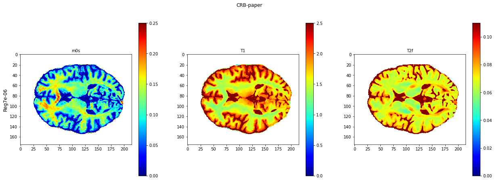
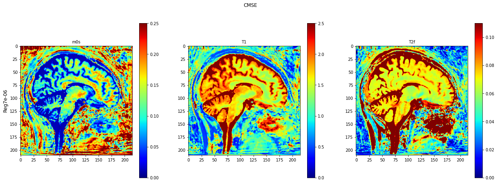
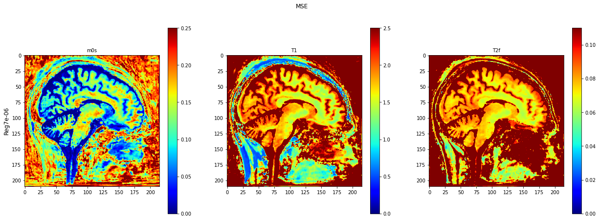
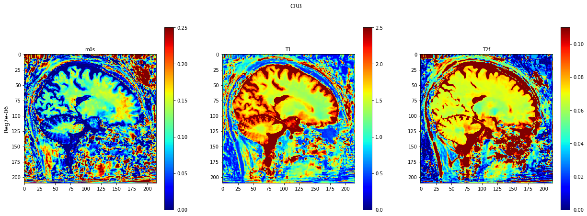
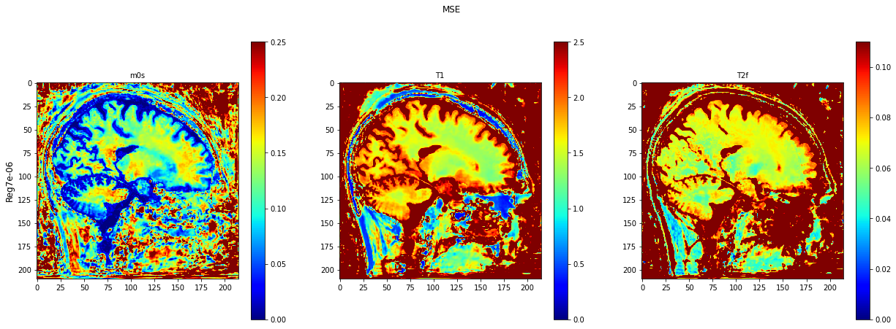

Testing on invivo data¶
[1]:
from os.path import isfile, join
import importlib
from IPython.display import clear_output
import numpy as np
import torch
import seaborn as sns
import matplotlib.pyplot as plt
import scipy as sc
import pickle
import sys
depth = '../'
for i in range(7):
sys.path.append(i*depth)
from MRF.Training_parameters import *
from MRF.BaseModel import *
from MRF.Projection import *
from MRF.models import *
from MRF.result_analysis_common import *
import MRF
from MRF.Offline import Network, Data_class, Performances
clear_output()
import torch
PD = 1
import matplotlib.pyplot as plt
from scipy.io import loadmat
root = 6*depth
1) Function to compute estimations and to show results¶
[8]:
def disp_settings(model_name):
fullname=root+'settings_files_offline/settings_'+model_name+'.pkl'
with open(fullname,'rb') as f:
sett=pickle.load(f)
for key, val in sett.items():
print('\033[1m'+key+'\033[0m')
print(val)
print('\n')
## invivo estimation
def invivo_parameter_estimation(model,model_name, fingerprints):
parametersm0s = []
parameterst1 = []
parameterst2 = []
with open(root+'settings_files_offline/settings_' + model_name + '.pkl', 'rb') as f:
settings = pickle.load(f)
settings['namepca'] = root+'paper_data/basis_for_compress.mat'
net = torch.load(join(root+'save_networks_offline', 'network_' + model_name), map_location='cpu')
training_parameters = Training_parameters(settings['batch_size'], 1, settings['nb_epochs'], settings['params'],
settings['normalization'], settings['complex'])
projection = Projection(settings['start_by_projection'], settings['dimension_projection'],
settings['initialization'], settings['normalization'], settings['namepca'], settings['complex'])
data_class = Data_class(training_parameters, settings['noise_type'], settings['noise_level'],
settings['minPD'], settings['maxPD'], settings['nb_files'], settings['path_files'])
validation_settings = {'validation': settings['validation'],
'small_validation_size': settings['small_validation_size'],
'validation_size': settings['validation_size']}
netw = model.model(projection=projection, nb_params=len(settings['params']))
device = torch.device('cpu')
netw.load_state_dict(net['NN'])
netw.to(device)
netw.eval()
with torch.no_grad():
fingerprints_tmpt = torch.tensor(fingerprints, dtype=torch.float).to(device)
prms = netw(fingerprints_tmpt)
prms = np.array(prms.cpu())
pars = prms
for ii, para in enumerate(settings['params']):
if settings['loss'][para] == 'MSE-Log':
pars[:, ii] = 10 ** pars[:, ii]
parametersm0s.append(np.array(pars[:, 0]))
parameterst1.append(np.array(pars[:, 1]))
parameterst2.append(np.array(pars[:, 2]))
parametersm0s = np.array(parametersm0s).reshape((mrfshape[1], mrfshape[2]))
parameterst1 = np.array(parameterst1).reshape((mrfshape[1], mrfshape[2]))
parameterst2 = np.array(parameterst2).reshape((mrfshape[1], mrfshape[2]))
invivo_estimation = np.concatenate((np.expand_dims(parametersm0s, axis=2), np.expand_dims(parameterst1, axis=2),
np.expand_dims(parameterst2, axis=2)), axis=2)
return invivo_estimation
def invivo_parameter_estimation_epochloop(model, model_name1,model_name, fingerprints):
parametersm0s = []
parameterst1 = []
parameterst2 = []
with open(root+'settings_files_offline/settings_' + model_name1 + '.pkl', 'rb') as f:
settings = pickle.load(f)
net = torch.load(join(root+'save_networks_offline', 'network_' + model_name), map_location='cpu')
training_parameters = Training_parameters(settings['batch_size'], 1, settings['nb_epochs'], settings['params'],
settings['normalization'])
projection = Projection(settings['start_by_projection'], settings['dimension_projection'],
settings['initialization'], settings['normalization'], settings['namepca'])
data_class = Data_class(training_parameters, settings['noise_type'], settings['noise_level'],
settings['minPD'], settings['maxPD'], settings['nb_files'], settings['path_files'])
validation_settings = {'validation': settings['validation'],
'small_validation_size': settings['small_validation_size'],
'validation_size': settings['validation_size']}
netw = model.model(projection=projection, nb_params=len(settings['params']))
device = torch.device('cpu')
netw.load_state_dict(net['NN'])
netw.to(device)
netw.eval()
with torch.no_grad():
fingerprints_tmpt = torch.tensor(fingerprints, dtype=torch.float).to(device)
prms = netw(fingerprints_tmpt)
prms = np.array(prms.cpu())
pars = prms
for ii, para in enumerate(settings['params']):
if settings['loss'][para] == 'MSE-Log':
pars[:, ii] = 10 ** pars[:, ii]
parametersm0s.append(np.array(pars[:, 0]))
parameterst1.append(np.array(pars[:, 1]))
parameterst2.append(np.array(pars[:, 2]))
parametersm0s = np.array(parametersm0s).reshape((mrfshape[1], mrfshape[2]))
parameterst1 = np.array(parameterst1).reshape((mrfshape[1], mrfshape[2]))
parameterst2 = np.array(parameterst2).reshape((mrfshape[1], mrfshape[2]))
invivo_estimation = np.concatenate((np.expand_dims(parametersm0s, axis=2), np.expand_dims(parameterst1, axis=2),
np.expand_dims(parameterst2, axis=2)), axis=2)
return invivo_estimation
def plot_invivo_slice(invivo_estimation,model_title,clorname='jet'):
fsize=12
fig = plt.figure(figsize=(21,7))
ax1=plt.subplot(1, 3, 1)
plt.imshow(invivo_estimation[:,:,0].T,cmap=clorname,vmin=0, vmax=0.25)
plt.colorbar()
plt.title('m0s' , fontsize=10)
plt.ylabel('Reg7e-06', fontsize=fsize)
ax1=plt.subplot(1, 3, 2)
plt.imshow(invivo_estimation[:,:,1].T,cmap=clorname,vmin=0, vmax=2.5)
plt.colorbar()
plt.title('T1' , fontsize=10)
ax1=plt.subplot(1, 3, 3)
plt.imshow(invivo_estimation[:,:,2].T,cmap=clorname,vmin=0, vmax=0.11)
plt.colorbar()
plt.title('T2f' , fontsize=10)
plt.suptitle(model_title)
def plot_invivo_2_slice_comparison(data_all, model_name, clorname='jet'):
rwo = 2
col = 3
fsize = 12
data = data_all[0]
fig = plt.figure(figsize=(21, 14))
n = 1
ax1 = plt.subplot(rwo, col, n)
plt.imshow(data[:, :, 0].T, cmap=clorname, vmin=0, vmax=0.25)
plt.colorbar()
plt.title('m0s', fontsize=10)
plt.ylabel('Reg7e-06', fontsize=fsize)
n = n + 1
ax1 = plt.subplot(rwo, col, n)
plt.imshow(data[:, :, 1].T, cmap=clorname, vmin=0, vmax=2.5)
plt.colorbar()
plt.title('T1', fontsize=10)
n = n + 1
ax1 = plt.subplot(rwo, col, n)
plt.imshow(data[:, :, 2].T, cmap=clorname, vmin=0, vmax=0.11)
plt.colorbar()
plt.title('T2f', fontsize=10)
plt.suptitle(model_name[0])
n = n + 1
###########
data = data_all[1]
ax1 = plt.subplot(rwo, col, n)
plt.imshow(data[:, :, 0].T, cmap=clorname, vmin=0, vmax=0.25)
plt.colorbar()
plt.title('m0s', fontsize=10)
plt.ylabel('Reg7e-06', fontsize=fsize)
n = n + 1
ax1 = plt.subplot(rwo, col, n)
plt.imshow(data[:, :, 1].T, cmap=clorname, vmin=0, vmax=2.5)
plt.colorbar()
plt.title('T1', fontsize=10)
n = n + 1
ax1 = plt.subplot(rwo, col, n)
plt.imshow(data[:, :, 2].T, cmap=clorname, vmin=0, vmax=0.11)
plt.colorbar()
plt.title('T2f', fontsize=10)
plt.suptitle(model_name[1])
n = n + 1
2) Showing settings of the trained networks¶
[9]:
model_name='CRB-paper'
disp_settings(model_name)
optimizer
Adam
lr
0.01
model
CRB-paper
noise_type
Standard
noise_level
0.01
normalization
After_projection
namepca
/gpfs/data/asslaenderlab/20200917_InVivo_MT_1mm_MWI_1p7mm/20201021_nonSweeping_Recos_n_Fits_Symmetric_Basis/basis_v3.2_sweep_0_std_B0_pio2_symmetric_B1_0.9pm0.2.mat
loss
['MSE-CRB', 'MSE-CRB', 'MSE-CRB', 'MSE-CRB', 'MSE-CRB', 'MSE', 'MSE', 'MSE']
batch_size
1024
start_by_projection
True
nb_epochs
800
params
[0, 1, 2]
initialization
Fixlayer
validation_size
56320
validation
True
small_validation_size
10240
minPD
0.1
maxPD
1.0
save_name
CRB-paper
nb_files
1000
path_files
v3_uniform_b1cutoff_B0B1vary_R13_complex
dimension_projection
13
name_model
CRB-paper
complex
True
3) Visualizing results¶
[14]:
#select a slice to test
invivo_fingerprints = sc.io.loadmat(root+'paper_data/invivo_test_slice.mat')['x'].T
mrfshape = invivo_fingerprints.shape
invivo_fingerprints = invivo_fingerprints.reshape((-1, mrfshape[1] * mrfshape[2]))
invivo_fingerprints = invivo_fingerprints.T
model = importlib.import_module('MRF.models.CRB-paper')
model_name_list = ['CRB-paper']
model_title_list = ['CRB-paper']
for i in range(len(model_name_list)):
model_name=model_name_list[i]
invivo_result_slice =invivo_parameter_estimation(model,model_name, invivo_fingerprints)
plot_invivo_slice(invivo_result_slice,model_title_list[i])
Fixlayer
torch.Size([37625, 26])

4) Other examples of results on different slices and/or different networks¶
[38]:
# Here, we use the function `plot_invivo_2_slice_comparison` to compare the results
# on invivo data for the network trained with the CRB loss and a network trained
# with the usual MSE loss.


[ ]:
[15]:
########################################### MSE/CRB invivo lr=0.01####################################################
model = importlib.import_module('MRF.models.full_joint_deep3_blochsimv3p2_complexproj_0817_noprojection')
########## MSE/CRB invivo lr=0.001 #################
model_name ='d0324_v3_nonsweep_varyB0B1_complex_nob1_blochsim_R13_p3_lr_0.001'
invivo_result_slice =invivo_parameter_estimation(model,model_name, invivo_fingerprints)
plot_invivo_slice(invivo_result_slice,'CRB')
########## MSE invivo lr=0.001 #####################
model_name ='d0324_MSE_v3_nonsweep_varyB0B1_complex_nob1_blochsim_R13_p3'
invivo_result_slice =invivo_parameter_estimation(model,model_name, invivo_fingerprints)
plot_invivo_slice(invivo_result_slice,'MSE')

